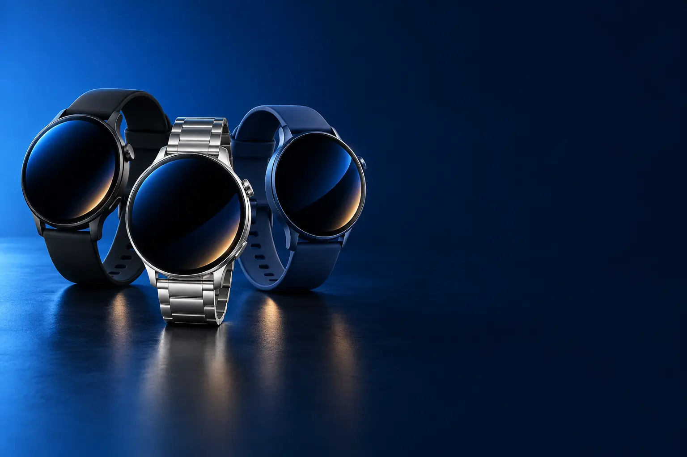

SAÚDE E DIA A DIA
Melhor smartwatch custo-benefício para saúde e dia a dia
Passos, sono, batimentos e notificações, com bateria de dias.

Melhor custo-benefício em smartwatchSamsung Galaxy Fit3
CURADORIA TECHAPROVADO · 2026
Smartwatch vai da pulseira que conta passos ao relógio de triatlo. Separamos 13 modelos em 3 perfis e dizemos para quem cada um vale a pena.

NOSSA LEITURA
Apple Watch só funciona com iPhone; Galaxy Watch, com Android. Pulseiras e relógios esportivos funcionam com os dois. Bateria: smartwatches completos duram 1 a 2 dias; os outros, semanas.
COMECE POR AQUI
SAÚDE E DIA A DIA
Passos, sono, batimentos e notificações, com bateria de dias.
SMARTWATCH COMPLETO
Apps, respostas a mensagens, pagamentos e recursos de saúde avançados.

CORRIDA E ESPORTE
GPS preciso, treinos e métricas para quem corre e treina.

A FICHA, TRADUZIDA
01 - COMPATIBILIDADE
Apple Watch funciona só com iPhone. Galaxy Watch funciona só com Android, e rende mais com celular Samsung. Pulseiras e relógios esportivos (Xiaomi, Huawei, Amazfit, Garmin) funcionam com os dois.
Confira no anúncio a versão mínima do sistema do celular.
Com iPhone, relógios de outras marcas recebem notificações, mas não deixam responder mensagens.
02 - BATERIA
Smartwatches completos (Apple Watch, Galaxy Watch) duram de 1 a 2 dias, porque têm tela brilhante e apps. Pulseiras e relógios simples duram de 1 a 3 semanas.
O GPS gasta muita bateria: a ficha costuma separar a bateria em modo relógio e em modo GPS.
Tela sempre ativa é cômoda, mas encurta a bateria.
03 - GPS
Relógios com GPS próprio registram corrida e pedal sem levar o celular. Sem GPS, o relógio usa o do celular, que precisa ir junto.
Para correr, GPS próprio é essencial. Multibanda é mais preciso entre prédios e árvores.
Mapas no pulso ajudam em trilhas e em cidades desconhecidas.
04 - SAÚDE
Todos medem passos, batimentos e sono. Os mais completos medem oxigenação, temperatura e alertam ritmo cardíaco irregular.
As medições servem para acompanhar tendências, não para diagnóstico.
Para medir bem, use o relógio um pouco acima do osso do pulso, firme mas sem apertar.
A CURADORIA EM DETALHE
13 modelos da pesquisa
PERFIL · 5 MODELOS, DA ENTRADA AO TOP DE LINHA
Para acompanhar passos, sono e batimentos e ver notificações no pulso, uma pulseira inteligente ou um relógio simples resolvem, com bateria de 1 a 2 semanas. Funcionam com Android e iPhone.
SAÚDE · CUSTO-BENEFÍCIO 1 de 5
Melhor custo-benefício em smartwatch
Pulseira · tela 1,6" · sono e batimentos
Ver preço na AmazonPOR DENTRO DA ESCOLHA
Pulseira inteligente da Samsung com tela de 1,6 polegada, monitoramento de sono, batimentos e passos e notificações do celular.
Mais de 13 mil avaliações e nota 4,8. Tela grande para uma pulseira.
| Formato | Pulseira |
|---|---|
| Tela | 1,6" |
| GPS | Não (usa o do celular) |
Fonte: ficha e descrição do anúncio, conferidas em 02/11/2026. Dados informados pelo fabricante. Nota e número de avaliações são de compradores, não teste do TechAprovado.

SAÚDE · ALTERNATIVA 2 de 5
Outro caminho: formato de relógio
Relógio · até 14 dias · notificações
Ver preço na AmazonPOR DENTRO DA ESCOLHA
Relógio inteligente da Xiaomi com tela colorida de alta resolução, bateria de até 14 dias e notificações de chamadas, mensagens e redes sociais.
O relógio de entrada mais avaliado da loja: mais de 17 mil avaliações.
| Formato | Relógio |
|---|---|
| Bateria | Até 14 dias |
| GPS | Não |
Fonte: ficha e descrição do anúncio, conferidas em 02/11/2026. Dados informados pelo fabricante. Nota e número de avaliações são de compradores, não teste do TechAprovado.

SAÚDE · INTERMEDIÁRIO 3 de 5
GPS próprio (GNSS) · AMOLED 1,62" · até 14 dias
Ver preço na AmazonPOR DENTRO DA ESCOLHA
Pulseira com corpo metálico fino, tela AMOLED de 1,62", posicionamento GNSS próprio (registra o trajeto sem levar o celular) e bateria de até 14 dias (8 dias em uso regular).
O GPS próprio é o degrau sobre as pulseiras comuns.
| Formato | Pulseira |
|---|---|
| Tela | 1,62" AMOLED |
| GPS | Sim (GNSS) |
Fonte: ficha e descrição do anúncio, conferidas em 02/11/2026. Dados informados pelo fabricante. Nota e número de avaliações são de compradores, não teste do TechAprovado.

POR DENTRO DA ESCOLHA
Relógio com tela AMOLED de 1,97 polegada, corpo de alumínio, GPS com mapas e rotas gratuitos, mais de 140 modos de exercício e bateria de até 14 dias.
Mapas gratuitos no pulso são raros nessa faixa.
| Formato | Relógio |
|---|---|
| Tela | 1,97" AMOLED |
| GPS | Sim, com mapas |
Fonte: ficha e descrição do anúncio, conferidas em 02/11/2026. Dados informados pelo fabricante. Nota e número de avaliações são de compradores, não teste do TechAprovado.

SAÚDE · TOP DE LINHA 5 de 5
Top de linha para saúde
GPS · modos esportivos · até 10 dias
Ver preço na AmazonPOR DENTRO DA ESCOLHA
Relógio de design compacto com sistema de posicionamento preciso, modos esportivos aprimorados, assistente de bem-estar emocional e bateria de até 10 dias.
Equilíbrio entre design, GPS e bateria. Mais de 1,7 mil avaliações.
| Formato | Relógio |
|---|---|
| GPS | Sim |
| Bateria | Até 10 dias |
Fonte: ficha e descrição do anúncio, conferidas em 02/11/2026. Dados informados pelo fabricante. Nota e número de avaliações são de compradores, não teste do TechAprovado.
PERFIL · 3 MODELOS, DA ENTRADA AO TOP DE LINHA
Os smartwatches completos rodam apps, respondem mensagens e têm recursos de saúde mais avançados. Em troca, a bateria dura de 1 a 2 dias. O Galaxy Watch é para Android; o Apple Watch, só para iPhone.
COMPLETO · CUSTO-BENEFÍCIO 1 de 3
Melhor custo-benefício em smartwatch completo
Galaxy AI · tela de 3.000 nits · treinador de corrida
Ver preço na AmazonPOR DENTRO DA ESCOLHA
Smartwatch completo com Galaxy AI, tela de até 3.000 nits, treinador de corrida personalizado e monitoramento avançado do sono.
O smartwatch completo mais acessível da lista, vendido pela Amazon.
| Compatível | Android |
|---|---|
| Tela | AMOLED, 3.000 nits |
| Conexão | Bluetooth |
Fonte: ficha e descrição do anúncio, conferidas em 02/11/2026. Dados informados pelo fabricante. Nota e número de avaliações são de compradores, não teste do TechAprovado.

COMPLETO · TOP DE LINHA 2 de 3
Top de linha Android
Aço inoxidável · 4G · Galaxy AI
Ver preço na AmazonPOR DENTRO DA ESCOLHA
A versão Classic do Watch8, com caixa de aço inoxidável, 4G (LTE) para atender ligações sem o celular, recursos cardíacos e Galaxy AI.
O 4G é o degrau: liberdade de deixar o celular em casa.
| Compatível | Android |
|---|---|
| Caixa | Aço inoxidável, 46 mm |
| Conexão | Bluetooth e 4G |
Fonte: ficha e descrição do anúncio, conferidas em 02/11/2026. Dados informados pelo fabricante. Nota e número de avaliações são de compradores, não teste do TechAprovado.

COMPLETO · ALTERNATIVA 3 de 3
Outro caminho: para iPhone
Tela sempre ativa · temperatura · 18 h
Ver preço na AmazonPOR DENTRO DA ESCOLHA
O Apple Watch de entrada, agora com tela sempre ativa, medição de temperatura e recursos essenciais de saúde, com bateria de 18 horas.
Para quem tem iPhone, é a escolha natural: nenhum outro relógio integra tanto.
| Compatível | iPhone |
|---|---|
| Tela | Sempre ativa |
| Bateria | 18 h |
Fonte: ficha e descrição do anúncio, conferidas em 02/11/2026. Dados informados pelo fabricante. Nota e número de avaliações são de compradores, não teste do TechAprovado.
PERFIL · 5 MODELOS, DA ENTRADA AO TOP DE LINHA
Os relógios esportivos priorizam GPS preciso, bateria longa e métricas de treino: ritmo, cadência, recuperação e planos de treino. A Garmin é a referência entre corredores.

ESPORTE · ALTERNATIVA 1 de 5
Outro caminho: aventura e trilha
Robusto · mapas offline · mais de 3 semanas
Ver preço na AmazonPOR DENTRO DA ESCOLHA
Relógio robusto com moldura e botões de aço inoxidável, GPS com mapas offline, resistência à água de 100 m, mais de 170 modos de treino e bateria de mais de 3 semanas.
Nota 4,9, a maior da lista. Mapas offline e bateria de semanas pelo preço de um Forerunner de entrada.
| GPS | Sim, mapas offline |
|---|---|
| Bateria | Mais de 3 semanas |
| Resistência | 100 m |
Fonte: ficha e descrição do anúncio, conferidas em 02/11/2026. Dados informados pelo fabricante. Nota e número de avaliações são de compradores, não teste do TechAprovado.
ESPORTE · CUSTO-BENEFÍCIO 2 de 5
Melhor custo-benefício para corrida
GPS · monitor cardíaco · planos de treino
Ver preço na AmazonPOR DENTRO DA ESCOLHA
Relógio de corrida da Garmin com GPS, monitor cardíaco de pulso, sugestões de treino diárias e métricas de recuperação.
O relógio de corrida mais avaliado da loja: quase 12 mil avaliações.
| GPS | Sim |
|---|---|
| Tela | MIP (transflexiva) |
| Público | Iniciante |
Fonte: ficha e descrição do anúncio, conferidas em 02/11/2026. Dados informados pelo fabricante. Nota e número de avaliações são de compradores, não teste do TechAprovado.

ESPORTE · INTERMEDIÁRIO 3 de 5
AMOLED · GPS · métricas de corrida
Ver preço na AmazonPOR DENTRO DA ESCOLHA
Relógio de corrida com tela AMOLED, GPS, monitoramento de saúde e bem-estar e métricas pensadas para corredores.
O degrau sobre o 55 é a tela AMOLED e as métricas avançadas.
| GPS | Sim |
|---|---|
| Tela | AMOLED |
| Público | Corredor frequente |
Fonte: ficha e descrição do anúncio, conferidas em 02/11/2026. Dados informados pelo fabricante. Nota e número de avaliações são de compradores, não teste do TechAprovado.

ESPORTE · AVANÇADO 4 de 5
AMOLED · música · até 13 dias
Ver preço na AmazonPOR DENTRO DA ESCOLHA
Tela AMOLED touch com botões, armazenamento de música, até 13 dias de bateria (20 h com GPS) e relatório matinal com sono, recuperação e treino do dia.
O relatório matinal ajuda a decidir quando treinar forte e quando descansar.
| GPS | Sim |
|---|---|
| Música | Sim |
| Bateria | 13 dias / 20 h GPS |
Fonte: ficha e descrição do anúncio, conferidas em 02/11/2026. Dados informados pelo fabricante. Nota e número de avaliações são de compradores, não teste do TechAprovado.

ESPORTE · TOP DE LINHA 5 de 5
Top de linha para esporte
GPS multibanda · AMOLED · triatlo
Ver preço na AmazonPOR DENTRO DA ESCOLHA
Relógio para corredores e triatletas com GPS multibanda (mais preciso entre prédios e árvores), tela AMOLED e recursos de treino avançados.
O GPS multibanda é o diferencial: trajetos precisos mesmo em cidade com prédios altos.
| GPS | Multibanda |
|---|---|
| Tela | AMOLED |
| Público | Triatlo e ultra |
Fonte: ficha e descrição do anúncio, conferidas em 02/11/2026. Dados informados pelo fabricante. Nota e número de avaliações são de compradores, não teste do TechAprovado.
Nenhum modelo encontrado. Tente outro termo ou volte para Todos.
LADO A LADO
| Modelo | Perfil | Posição | GPS | Destaque | Nota (avaliações) |
|---|---|---|---|---|---|
| Samsung Galaxy Fit3 | Saúde | Custo-benefício | Não (usa o do celular) | Pulseira · tela 1,6" · sono e batimentos | 4,8 (13,4 mil) |
| Redmi Watch 5 Active | Saúde | Alternativa | Não | Relógio · até 14 dias · notificações | 4,7 (17,4 mil) |
| HUAWEI Band 11 Pro | Saúde | Intermediário | Sim (GNSS) | GPS próprio (GNSS) · AMOLED 1,62" · até 14 dias | 4,5 (307) |
| Amazfit Bip 6 | Saúde | Avançado | Sim, com mapas | AMOLED 1,97" · GPS e mapas · até 14 dias | 4,7 (662) |
| HUAWEI WATCH FIT 4 | Saúde | Top de linha | Sim | GPS · modos esportivos · até 10 dias | 4,7 (1,7 mil) |
| Samsung Galaxy Watch8 40 mm | Completo | Custo-benefício | Galaxy AI · tela de 3.000 nits · treinador de corrida | 4,7 (652) | |
| Samsung Galaxy Watch8 Classic 46 mm LTE | Completo | Top de linha | Aço inoxidável · 4G · Galaxy AI | 4,5 (80) | |
| Apple Watch SE 3 (GPS, 40 mm) | Completo | Alternativa | Tela sempre ativa · temperatura · 18 h | 4,6 (259) | |
| Amazfit T-Rex 3 | Esporte | Alternativa | Sim, mapas offline | Robusto · mapas offline · mais de 3 semanas | 4,9 (2,1 mil) |
| Garmin Forerunner 55 | Esporte | Custo-benefício | Sim | GPS · monitor cardíaco · planos de treino | 4,7 (11,8 mil) |
| Garmin Forerunner 165 | Esporte | Intermediário | Sim | AMOLED · GPS · métricas de corrida | 4,8 (4,4 mil) |
| Garmin Forerunner 265 Music | Esporte | Avançado | Sim | AMOLED · música · até 13 dias | 4,6 (1,8 mil) |
| Garmin Forerunner 965 | Esporte | Top de linha | Multibanda | GPS multibanda · AMOLED · triatlo | 4,7 (199) |
CONSIDERAÇÕES FINAIS
Apple Watch Series e Ultra não tinham anúncios com avaliações suficientes na data da conferência. Relógios genéricos sem marca ficaram de fora.
O Samsung Galaxy Fit3 para saúde, e o Galaxy Watch8 para quem quer um smartwatch completo no Android.
Apple Watch, pulseiras e relógios esportivos funcionam. Galaxy Watch, não.
O Garmin Forerunner 55: GPS confiável e planos de treino.
Smartwatches completos, 1 a 2 dias; pulseiras e esportivos, de 1 a 3 semanas.
Porque ele muda várias vezes por dia. O botão leva ao valor atualizado na loja.
TRANSPARÊNCIA EDITORIAL
Separamos os relógios pelo uso principal e montamos uma escada de preço em cada perfil. Cada modelo precisa responder com clareza "para quem ele é o certo".
Em cada perfil há modelos em faixas de preço diferentes, e cada degrau precisa entregar algo que o anterior não entrega. Dois modelos com a mesma proposta não entram juntos.
Ficha, nota e número de avaliações foram conferidos nos anúncios das lojas em 02/11/2026. As avaliações são de compradores, não teste nosso.
Os links de compra desta página são de afiliado: se você comprar por eles, o TechAprovado pode ganhar uma comissão, sem custo adicional para você. Isso não muda a ordem nem a escolha dos produtos.
📲 GUIAS E DICAS NO SEU FEED
Dicas práticas antes de comprar, em carrosséis e vídeos curtos, sempre com link para o guia completo.